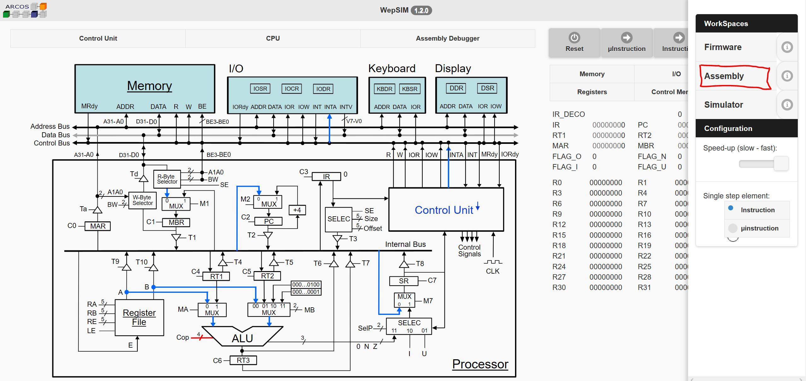
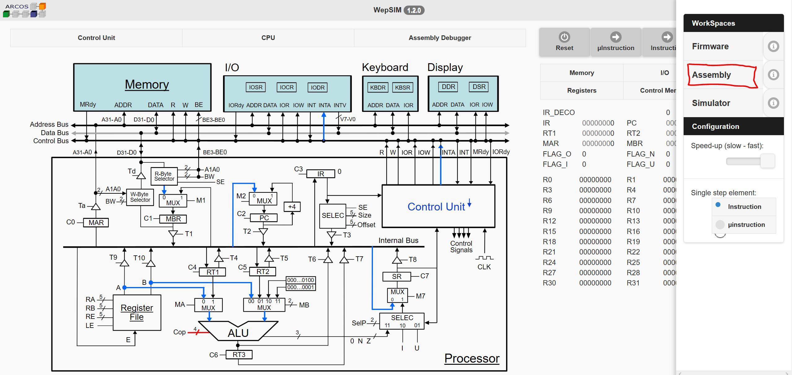
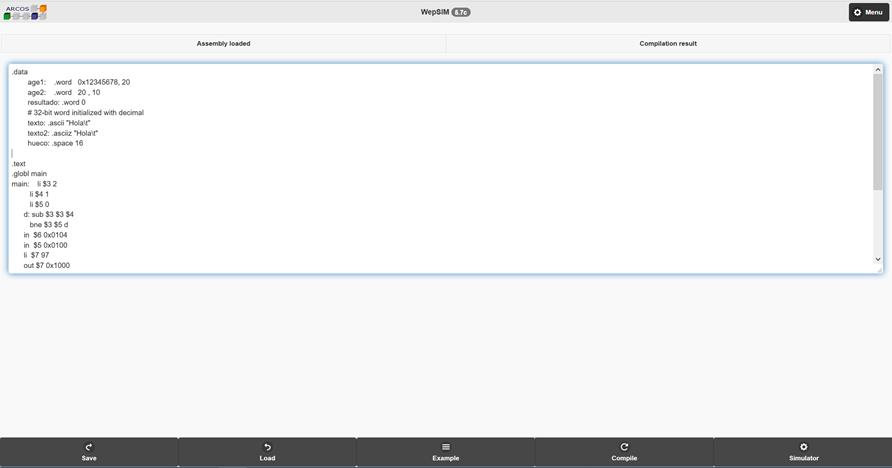
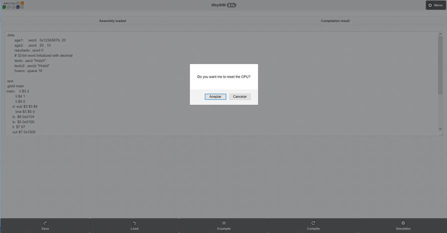
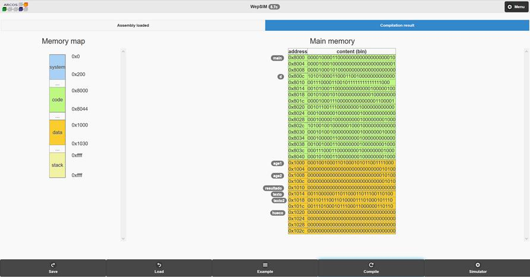
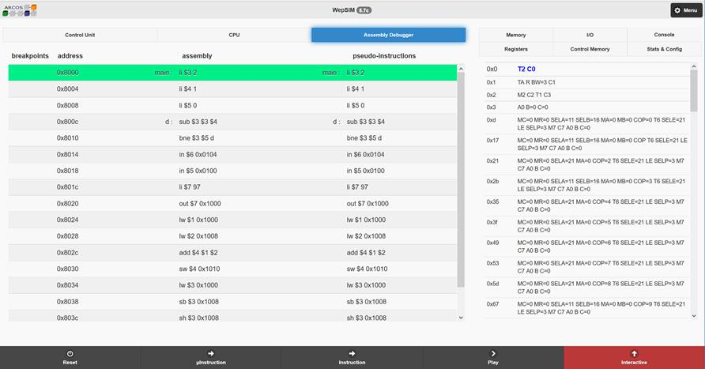

Ensamblador en WepSIM
El código en
ensamblador se describe en un fichero de texto con una primera sección de datos
(.data) y una segunda sección para el código (.text)
En la sección de datos es posible definir las variables y constantes que se
alojarán en el segmento de datos de la memoria principal. Dicha sección
comienza con la directiva .data. Las directivas que permiten especificar
los distintos tipos de datos que pueden definirse son:
· .ascii: va seguida de la cadena de caracteres, instruyendo al ensamblador para crear una zona de memoria con datos, y almacenar en ella la cadena que se indique.
· .asciiz: va seguida de la cadena de caracteres, instruyendo al ensamblador para crear una zona de memoria con datos, y almacenar en ella la cadena que se muestra terminado por un byte con valor cero.
· .byte: va seguida de uno o más valores que formarán parte del valor de la variable. En caso de varios valores, dichos valores se separarán por coma. Para los valores se puede usar: carácter, octal, hexadecimal y decimal.
·
.half:
va seguida
de uno o más valores que formarán parte del valor de la variable. En caso de varios
valores, dichos valores se separarán por coma.
Para los valores se puede usar: octal, hexadecimal y decimal.
·
.word:
va seguida
de uno o más valores que formarán parte del valor de la variable. En caso de varios
valores, dichos valores se separarán por coma.
Para los valores se puede usar: octal, hexadecimal y decimal.
· .space: va seguida del número de bytes, en formato decimal, que el usuario desea reservar en memoria.
El formato de un valor de los tipos de datos comentados es:
· Cadena de caracteres: secuencia de caracteres
entre comillas dobles.
Por ejemplo: “hola 123\n”
· Carácter: carácter entre comillas
simples.
Por ejemplo: ‘c’.
· Octal: un número que comienza por cero y sus dígitos son menores que ocho. Por ejemplo: 012.
· Hexadecimal: un número que comienza por
el prefijo 0x y sus dígitos son del cero al nueve y las letras a, b, c, d, e y
f.
Por ejemplo: 0x12.
· Decimal: un número que no está en
formato octal o hexadecimal con dígitos comprendidos entre el cero y el nueve
(ambos incluidos).
Por ejemplo: 12.
En la sección de código es posible definir las subrutinas que se alojarán en el segmento de código de la memoria principal. Dicha sección comienza con la directiva .text.
Es posible usar
comentarios de línea usando el carácter #
Todo lo que hay a continuación de este carácter hasta el final de línea será
ignorado por el ensamblador.
Un ejemplo programa sería:
.data
age1: .word 0x12345678, 20
age2: .word 20 , 10
resultado: .word 0
# 32-bit word initialized with decimal
texto: .ascii "Hola\t"
texto2: .asciiz "Hola\t"
hueco: .space 16
.text
.globl main
main: li $3 2
li $4 1
li $5 0
Figura 19 Ejemplo de secciones
de dato y código en ensamblador para probar microcódigos
Un fichero de texto
con las dos secciones antes comentadas (datos y código) se carga en la pantalla
de Ensamblador. Para acceder a dicha pantalla se ha de ir al menú (parte
superior derecha) e indicar la opción Assembly (véase la Figura 16)
 

Figura 20 Pantalla principal: opción de carga de código ensamblador
A continuación aparecerá una pantalla con un cuadro de texto que permite indicar el código en ensamblador. Es posible cargar un código existente usando el botón “Load” de la barra inferior, modificar un código anteriormente cargado o salvar el código actualmente en cargado con el botón “Save” de la barra inferior.
Una vez se indique el código es preciso hacer clic en el botón “Compile” para pasar a binario y cargar en la memoria de principal el binario resultante, tal y como se muestra en la Figura 21. Si todo va bien preguntará si se desea reiniciar la CPU (véase la Figura 22)

Figura 21 Pantalla ensamblador:
cuadro de texto con ensamblador a cargar

Figura 22 Pantalla ensamblador: opción de reiniciar la CPU
Una vez indicado que si se quiere resetear la CPU (salvo en algún extraño caso en el que se intente ejecutar un código modificado con el estado actual de la CPU definido por los valores en curso de los registros), se pasará a la pantalla indicada en la Figura 23, donde se mostrará el contenido de la memoria principal en binario.

Figura 23 Pantalla ensamblador: código finalmente compilado
El siguiente paso es ir a la pantalla principal para ejecutar la combinación de
firmware y ensamblador cargado, para lo que ha de pulsar el botón “Simulador”
de la barra inferior.
Ejecución en WepSIM
Estando en la pantalla principal es posible visualizar:
·
El
contenido de la memoria de control (véase la Figura 24), con las señales que
están asociadas a cada ciclo. Para ello ha de pulsar el botón “Control Memory” en
la barra de botones situada en la parte superior derecha de la pantalla
principal.
Se destaca las señales que en el presente ciclo de reloj están activadas en
azul con letra algo más grande.
Se dispone de una barra de desplazamiento para poder inspeccionar todo el
contenido de la memoria de control.
· El contenido de la memoria principal (véase la Figura 25), con las instrucciones en ensamblador a ejecutar. Para estas, es posible establecer un punto de ruptura haciendo clic en la columna breakpoints. Al establecer un punto de ruptura aparecerá un icono en dicha columna.

Figura 24 Pantalla principal: visualización de la memoria de control

Figura 25 Pantalla principal: visualización del código en la memoria principal
Estando en la pantalla principal es posible ejecutar:
· Microinstrucción a microinstrucción pulsando el botón “µInstrucción” (véase la Figura 26), de forma que se pasará al siguiente ciclo de reloj y se generarán las señales de control asociadas.
· Instrucción a instrucción pulsando el botón “Instrucción” (véase la Figura 26) de forma que se generarán todos los ciclos de reloj asociados al microprograma de la instrucción, parando al principio del fetch.

Figura 26 Pantalla principal: opciones para la ejecución
Dando al botón “Registers” en la barra de botones situada en la parte superior
derecha de la pantalla principal (véase la Figura 26) es posible ver cómo los
valores de los registros son modificados durante la ejecución.
Es posible visualizar también la unidad de control como se muestra en la Figura 27.

Figura 27 Pantalla principal: visualización de la unidad de control
Así como también es posible reiniciar la ejecución haciendo clic al botón “Reset” situado en la barra de botones que aparece en la parte inferior de la pantalla.